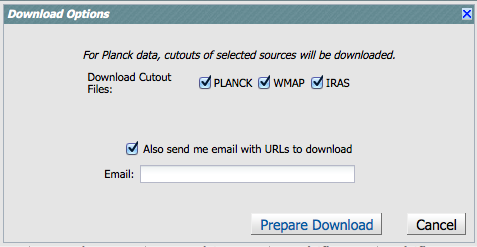
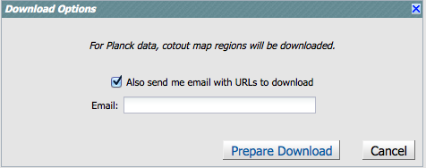

Downloading Data from the NASA Planck Archive (NPA)
This page is an overview of how to download data from the the NASA
Planck Archive (NPA). There are basically three kinds of searches in
the NPA. (1) TOI (Time Ordered Information); (2) Browse catalogs
(single wavelength, all positions); (3) cutout visualization (single
position, all wavelengths). (See the section on searching for more information on
searching.) This page covers downloading data from those three kinds
of searches.
Contents of page/chapter:
+Overview
+Downloading TOIs -- Including Minimap
+Browse Catalogs
+Cutout Visualizations
+Additional Catalogs
+Background Monitor
+Using the Download Scripts
Overview
There are diskette icons ( ) in various places
around the NPA. From the image
toolbox, clicking on this saves the current image (as FITS, png
with overlays, or just the overlays as a ds9 regions file). From a table, it saves the current table as
an IPAC table file, which is basically ASCII.
) in various places
around the NPA. From the image
toolbox, clicking on this saves the current image (as FITS, png
with overlays, or just the overlays as a ds9 regions file). From a table, it saves the current table as
an IPAC table file, which is basically ASCII.
If there are checkboxes and a "Prepare Download" button available, you
can select multiple images or catalog rows using the checkboxes, and
then click "Prepare Download" to initiate a download of the selected
data plus related files. This packaging process is managed by the Background Monitor.
There are basically three kinds of searches in the NPA. (1) TOI (Time
Ordered Information); (2) Browse catalogs (single wavelength, all
positions); (3) cutout visualization (single position, all
wavelengths). Downloading data is similar but not necessarily exactly
the same in all the results, so we describe each separate (with screen
snapshots) next.
Note that
you control where the data are saved on your disk through your
browser; your browser may be configured to store all downloads in a
particular location on your disk.
TOIs
After a TOI search, you have the
results, which is a list of the MJDs (modified Julian Dates)
during which your source was observed by Planck, along with the number
of TOI samples obtained on each day.
Each MJD's data can be individually selected for download or map
generation by clicking on the box to the left of each entry. You can
also select all available data by clicking in the box that appears on
the column header (above all the checkboxes).
From this point, you can click on "Prepare Download", which brings up
the "download options" box, as shown:

Within this, you can specify whether or not you
want to download the search results in FITS binary table format and if
you wish the associated Minimap image to be generated and included in
the download. The TOIs and images you have requested are accessed and
managed by the standard Background
Monitor.
If you generate a Minimap interactively, click on the diskette icon
() in the image toolbox to save the image as
FITS or PNG.
If you generate the Minimap separately, AND select Minimap in the
download dialog box with a different selection of dates, then this
new map is the one that you will download, i.e., not
the version displayed in the tab.

Notes:
- The combination of choosing 'No' for Download TOI Data and not
selecting Download TOI Minimap results in a "No data available
for download' Information pop-up window being displayed when you click
on Prepare Download.
- The download is packaged as a zip file and you can select whether
the Zip File Structure is 'Flattened (no folders)' or
'Structured (with folders)'.
- You can choose to be notified of the requested data being
available via e-mail, which will inform you that when your packaging
request has completed, and will include the URL for immediate
download.
The FITS file returned from your search and download contains nine
columns of data with one row per time-stamped observation. Here are
the names and descriptions of each column.
- RA, DEC, GLON, GLAT: detector point direction given in degrees
for both Equatorial (J2000) and Galactic coordinates.
- MJD: Planck on-board time (OBT) expressed as modified Julian date.
- SIGNAL: calibrated detector reading in K_CMB (for LFI bands) after
removal of offsets.
- SSO: Solar system flag - set to 1 if a bright planet is in the beam.
- PSI: Roll angle in degrees.
- DETECTOR: The name of the detector from which the TOI sample was
taken. See the Planck documentaiton for more details.
Note that
you control where the data are saved on your disk through your
browser; your browser may be configured to store all downloads in a
particular location on your disk.
Browse Catalogs
After a "Browse Catalogs" search (search all positions, by
wavelength), you have a catalog loaded that has checkboxes on the far
left hand side.
To just save the catalog itself, click on the diskette icon
() in the upper right of the table to save the
table as an IPAC table file, which is basically ASCII.
To download additional data for each source, click the
checkboxes on the far left side of each row to select individual
sources, or click the box at the top of the column to download
everything. Then click "Prepare Download." You obtain this dialog box:

from which
you can select Planck, WMAP, and/or IRAS cutouts to download. (These are
the cutouts shown at the bottom of the search results.) You can choose to be
notified of the requested data being available via e-mail, which will
inform you that when your packaging request has completed, and will
include the URL for immediate download.
Note that
you control where the data are saved on your disk through your
browser; your browser may be configured to store all downloads in a
particular location on your disk.
Cutout Visualizations
After a "Cutout Visualizations" search (search all wavelengths, by
position), you can have many tabs loaded, one per selected catalog,
with cutouts at the bottom of the search
results.
Each of those cutouts has a checkbox in the upper left of the cutout
window. Select via those checkboxes which cutouts you wish to
download, then click "Prepare Download." You obtain this dialog box:

You can choose to be
notified of the requested data being available via e-mail, which will
inform you that when your packaging request has completed, and will
include the URL for immediate download.
The download will contain the FITS files corresponding to your
selected images. If only one is selected, the FITS file is downloaded
directly; otherwise, the FITS files are combined into a zip file.
Note that
you control where the data are saved on your disk through your
browser; your browser may be configured to store all downloads in a
particular location on your disk.
To save just the catalog itself returned by the search, click on the
diskette icon () in the upper right of the
table to save the table as an IPAC table file, which is basically ASCII. Note
that you need to click on the diskette catalog in each tab
separately.
Additional Catalogs
If you selected additional catalogs to
overlay, each catalog will appear in its own tab. To save these
catalogs, click on the diskette icon () in the
upper right of the table to save the table as an IPAC table file, which is basically ASCII.
Note that you need to click on the diskette catalog in each tab
separately.
Note also that
you control where the data are saved on your disk through your
browser; your browser may be configured to store all downloads in a
particular location on your disk.
Background Monitor
The Background Monitor appears as a blue tab (or button) in the upper
right of your window to keep track of the data downloads you have
requested. Because it appears in the row of blue tabs at the top,
more information about how the Background Monitor works is in the Basics section.
Using the Download Scripts
If you download a large amount of data, it may create more than one
zip file for you. If it takes longer than a few minutes to package
your data, ask the Background Monitor to email you when it completes
packaging. Then the NPA will generate a script for
you so you can download all of the zip files with a single click.
Links to several versions of the script are included in the
notification email. You can choose from wget and curl, and you can
choose to have it unzip the zip files at the same time as it
downloads.
Generally speaking, the wget script is best for Linux and Unix users.
The curl script is best for Mac users, because curl is part of the
standard OS distribution; Mac users can also go retrieve and install
wget
and then use the wget scripts. For any of the scripts, you can also
choose to include an option that unzips the zip files automatically.
The files stay on disk here for at least 72 hours, so you have a
window of time to download them.
Save the script to a plain text file, and invoke the script. You can
copy and paste the script lines individually into your terminal
window, or by typing "csh [yourtextfile]" at the prompt. The files
will be automatically and sequentially downloaded to your disk, and if
you've selected that option, unzipped as well.
For Windows users, download and save the text file of URLs . Then follow the
following steps to install the wget script and then download your data:
- Go to the Windows wget web page
- Scroll to the Download section and retrieve the wget installation.
- Install wget and add the binary to your path.
- Download the text file of URLs
- At the command prompt: wget --content-disposition -i <file_of_urls_downloaded.txt>